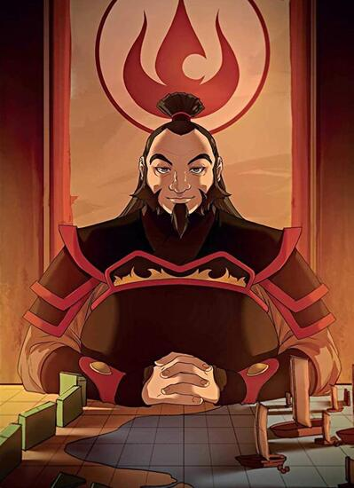
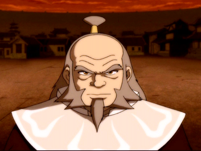
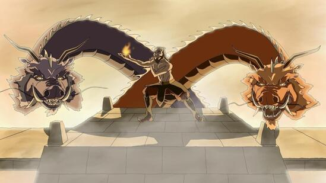
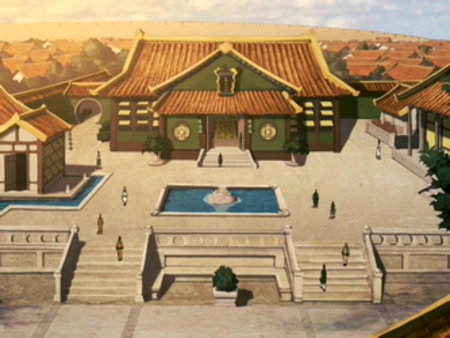

- Iroh foi um general aposentado da Nação do Fogo.
- Mestre da Ordem do Lótus Branco.
- Recebeu o título de O Dragão do Oeste, após, supostamente, matar o último dragão do Mundo de Avatar.
- Dono da casa de chás Dragão de Jasmim no anel superior de Ba Sing Se, além de ser um grande apreciador da bebida.



